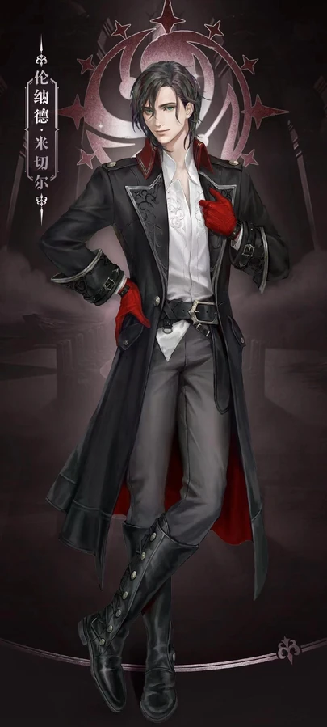
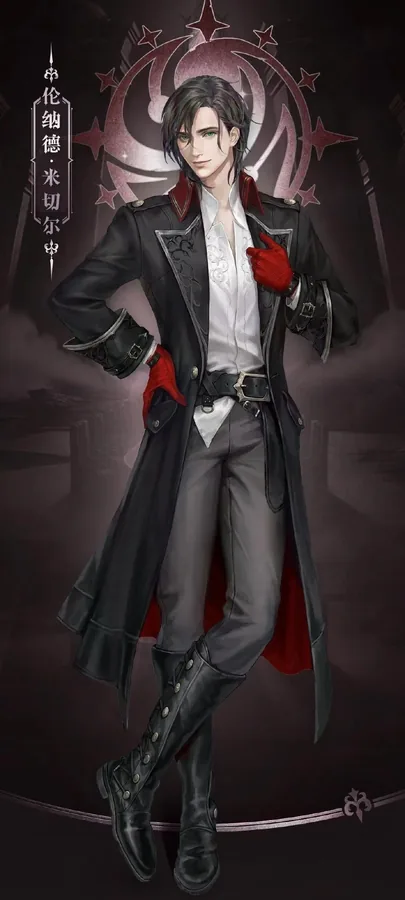

Leonard Mitchell is a captain of the Red Gloves, a division under the Church of the Evernight Goddess, in Backlund diocese. Originally a member of the Tingen City division of the Nighthawks, he has since joined the Red Gloves to get his revenge against Ince Zangwill for the deaths of Dunn Smith and Klein Moretti.
This page includes major-spoiler information from the linked source article. The fact fields below are transcribed from that article’s character infobox.Translations
| Language | Official Translation |
|---|---|
| English | Leonard Mitchell |
| Chinese | 伦纳德·米切尔 |
| Korean | 레너드 미첼 |
| Thai | เลโอนาร์ด มิตเชลล์ |
Role & affiliations
Aliases and titles
- The Star
- Dear Poet
- Mr. Poet
Affiliations
- Tarot Club
- Red Gloves
- Blackthorn Security Company
- Hermits of Fate
Occupation(s)
- High-ranking Deacon
- Red Gloves Captain
- Nighthawk
Religion(s)
- Church of the Evernight Goddess
- Church of the Fool
Pathway & abilities
Pathway: Darkness
Recorded progression: Sequence 4: Nightwatcher (Darkness Pathway)

Quotes10 lines
Complete quote entries transcribed from the character’s dedicated wiki Quotes page. The collection includes available Book One and Book Two entries.
I'm considering asking Captain's permission to apply for a Feynapotter lute. How can there not be an accompaniment when singing?
Heh heh, I'm just kidding.
— Leonard Mitchell to Klein Moretti, Lord of Mysteries, Chapter 44.
Don’t mind it. There are many special people in this world that can always do things others can’t, such as you... and me.
— Leonard Mitchell to Klein Moretti, Lord of Mysteries, Chapter 76.
Sigh, every time I recall this, it seems like I'm touching the dust heaps of history. The poet in me stirs when thinking of this irreversible and fated destiny, but alas, I do not know how to compose the poem.
— Leonard Mitchell, Lord of Mysteries, Chapter 97.
I’m very sorry, your brother Klein died at the hands of an evil criminal while he was trying to save others. He’s a hero, a true hero.
— Leonard Mitchell to Melissa and Benson Moretti, Lord of Mysteries, Chapter 211.
He’s overtaken me by leaps and bounds…
— Leonard Mitchell, Lord of Mysteries, Chapter 853.
Everyone here isn’t to be trifled with… Is this what’s called a gathering of protagonists?
— Leonard Mitchell, in his first Tarot Club gathering, Lord of Mysteries, Chapter 963.
Little Sun? How is he “little”? That fellow is clearly taller and larger than me...
— Leonard Mitchell, Lord of Mysteries, Chapter 1063.
This means that the organization that uses the tarot cards as code names has officially stepped onto the stage of history. Heh heh, please forgive me for using poetic words.
— Leonard Mitchell, Lord of Mysteries, Chapter 1202.
Think of me as a poet.
— Leonard Mitchell to Lumian Lee, Circle of Inevitability, Chapter 299.
I want to make a self-playing piano...
— Leonard Mitchell, Circle of Inevitability, Chapter 1073.
Image gallery

